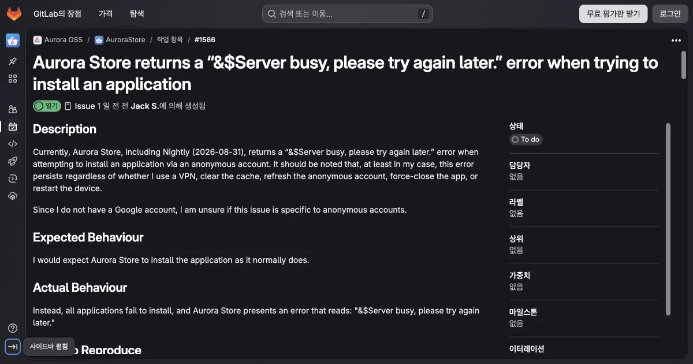
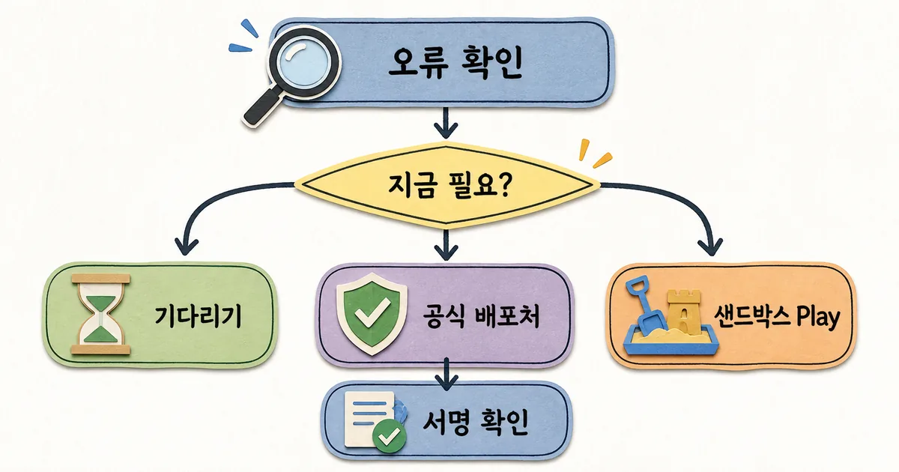

Aurora Store에서 앱 검색은 되는데 설치·업데이트만 Server busy로 멈춘다면, 먼저 실패 단계와 계정 유형을 기록한다. 8월 장애는 9월 23일 관리자가 익명 계정 발급 서버 문제로 설명하며 종료했다. 다만 10월 24일 재발 댓글도 있어 모든 기기의 복구를 뜻하지는 않는다. 과거 해결 기록과 내 기기의 현재 증상을 나눠 보면 불필요한 초기화나 주 계정 로그인부터 시도하지 않아도 된다.
IT 트렌드 해설
30초 요약
- 8월 Server busy 장애는 9월 23일 관리자가 계정 발급 서버 문제로 설명하며 종료했다. 재발 문구만으로 현재 원인까지 같다고 단정하지 않는다.
- 실패 단계·버전·현재 계정 유형을 기록한 뒤 급한 업데이트만 공식 배포처와 호환 조건을 확인한다.
- 9월 30일은 이미 지난 정책 일정이다. 초기 적용 스토어·지역 조건만으로 8월 장애나 현재 모든 설치 오류를 설명할 수는 없다.
먼저 알아둘 말
- 익명 계정
- Aurora Store 서비스가 제공하는 공유 Google 계정 자격 증명으로, 사용자의 개인 계정 대신 Google Play에 접근하는 방식이다.
- 상류 API
- Aurora Store가 앱 정보와 파일을 가져올 때 의존하는 Google Play 쪽 비공개 연결 규칙을 뜻한다.
- 샌드박스 Play
- GrapheneOS에서 Google Play를 특별 권한 없이 일반 앱과 같은 격리 공간에 설치하는 공식 호환 방식이다.
- 서명 연속성
- 다른 배포처에서 받은 업데이트도 기존 앱과 같은 개발자 서명으로 확인돼 정상 업그레이드되는 조건이다.
핵심 해설 · Aurora OSS GitLab · 2026. 8. 31
Aurora Store 익명 계정 설치에서 Server busy 오류 보고
8월 31일 공개 이슈는 익명 계정의 설치 실패와 캐시 삭제·VPN 전환 등의 실패를 기록했다. 이후 9월 23일 관리자가 계정 발급 서버 문제로 해결 처리했으며, 10월 24일에는 별도 재발 댓글이 추가됐다. 최초 보고와 후속 상태를 구분해 읽는다.
먼저 답: 8월 장애는 종료됐고 지금 증상은 다시 구분한다
8월 31일 최초 보고는 Aurora Store 4.8.4·당일 Nightly, 익명 계정, CalyxOS의 설치 실패였다. 2026년 10월 27일 확인한 이슈는 닫힘·Done 상태다.
관리자는 9월 23일 클라이언트가 아니라 계정 자격 증명을 나눠 주는 발급 서버(dispenser) 쪽 문제였다고 설명하며 해결 처리했다.
10월 24일에는 다른 사용자가 같은 문구의 재발을 남겼다. 이 댓글은 해당 환경의 사용자 보고이며, 같은 원인이 다시 생겼다는 관리자 확인은 아니다. 과거 해결과 현재 증상을 분리해야 한다. 아래 절차는 공개 문서에 따른 확인 순서이며 실제 Android 기기에서 설치·계정 전환을 시험한 결과가 아니다.
- 오류 화면의 문구와 발생 시각을 적고, 로그인·검색·다운로드·설치 중 어디서 멈췄는지 나눈다.
- Aurora Store 버전, Android·운영체제 버전, 익명·개인 계정 중 현재 유형을 확인한다. 계정은 바꾸지 않는다.
- 실패한 앱 이름과 현재·목표 버전을 적고, 한 앱만 실패하는지 기존 업데이트 기록과 비교한다.
- 급한 보안 업데이트라면 개발자 공식 배포처를 확인하고, 아니라면 현재 이슈 상태와 후속 공지를 확인한다.
| 보이는 상태 | 다음 확인·중단 기준 |
|---|---|
| 익명 로그인부터 실패 | 계정 발급 단계의 증상으로 기록한다. 주 Google 계정 입력을 첫 해결책으로 삼지 않는다. |
| 검색은 되고 다운로드가 실패 | Server busy 원문과 시각을 남긴다. 8월 종료 기록을 현재 장애의 원인 증명으로 쓰지 않는다. |
| 파일은 받았지만 설치가 실패 | 시스템 설치 창의 별도 오류를 기록한다. 상류 서버 문제와 같은 것으로 취급하지 않는다. |
| 특정 앱·업데이트만 실패 | 공식 README의 유료 앱·Play Asset Delivery 제한과 기존 설치본 조건을 확인한다. 기존 앱 삭제는 먼저 하지 않는다. |

Aurora Store는 앱을 보관하는 독립 창고가 아니다
프로젝트 README는 Aurora Store를 Google Play의 앱 정보와 APK를 직접 가져오는 비공식 클라이언트라고 설명한다. 자체 앱 파일을 보관해 나눠 주는 별도 스토어가 아니라 Google Play로 들어가는 다른 문에 가깝다.
익명 로그인도 계정이 없는 구조는 아니다. GrapheneOS 사용 안내에 따르면 Aurora Store 서비스가 공유 계정 자격 증명을 가져와 대신 로그인한다. 이 계정 풀이나 Google Play 쪽 상류 API의 비공개 요청 형식이 달라지면 Aurora Store 코드를 바꾸지 않았어도 설치가 멈출 수 있다.
| 구분 | 현재 근거 | 지금 판단 |
|---|---|---|
| 8월 설치 실패 | 익명 계정·4.8.4·CalyxOS 최초 보고 | 과거 관찰 |
| 9월 23일 종료 | 관리자가 발급 서버 문제로 설명 | 당시 해결 기록 |
| 10월 24일 재발 | 다른 사용자 댓글 한 건 | 현재 원인 미확정 |
| Google·GrapheneOS 차단 | 위 기록만으로 의도·전체 범위 증명 불가 | 단정하지 않음 |
멈춘 곳은 설치 요청이고 기존 앱이 지워진 것은 아니다
이슈의 재현 순서는 앱 검색, 상세 결과 선택, 설치 누르기다. 따라서 적어도 최초 보고만으로는 기기에 이미 설치된 앱이 원격으로 비활성화됐다거나 Android가 대체 스토어 자체를 막았다고 말할 수 없다.
다만 보안 업데이트가 필요한 앱은 기다림의 비용이 커진다. 오류가 반복되면 앱 이름, 현재 버전, 필요한 새 버전, 마지막 정상 설치 시각을 적는다. 그래야 상류 장애와 특정 앱 호환 문제를 분리할 수 있다.
지난 9월 정책 일정은 현재 오류의 진단값이 아니다
9월 2일 발행 당시에는 9월 30일이 시행 전이었지만, 10월에는 이미 지난 날짜다. 현재 Android 공식 FAQ는 초기 집행을 특정 참여 스토어·선정 지역의 인증 기기 조건으로 설명한다. 목록 밖 스토어나 직접 배포에는 그 초기 요구가 아직 적용되지 않는다고 구분한다.
8월 31일 장애는 해당 일정에 앞섰고, 이후 관리자도 별도의 발급 서버 문제로 설명했다. 따라서 정책 일정만으로 8월 장애를 설명할 수 없다. 현재 설치 오류도 실제 실패 문구와 적용 조건을 확인해야 하며, 정책의 존재만으로 Aurora Store 전체 차단이라고 판단하지 않는다.
업데이트가 급할 때 설치 경로를 고른다
먼저 업데이트가 보안 패치인지 기능 업데이트인지 확인한다. 급하지 않다면 현재 이슈의 상태·날짜·관리자 설명을 확인하고 기다릴 수 있다. 8월 작성자에게 캐시 삭제와 VPN 전환이 통하지 않았다는 기록은 보존하되, 모든 오류에서 그 조작이 무효라는 일반 법칙으로 해석하지 않는다.

다른 배포처를 고를 때는 개발자가 연결한 공식 배포 링크인지, 같은 패키지와 기존 서명으로 이어지는 서명 연속성이 있는지 먼저 확인한다. F-Droid 빌드가 기존 설치본과 같은 서명이라고 가정하지 않는다. 호환 여부를 확인할 수 없다면 기존 앱을 삭제해 억지로 설치하지 말고 데이터를 보존한 채 멈춘다.
GrapheneOS에서는 앱을 사용할 같은 프로필의 공식 App Store에서 Google Play services를 선택하면 Play services와 Play Store가 함께 설치된다. Play Store의 앱 설치에는 Google 계정 로그인이 필요하다.
일반 앱 샌드박스에서 동작하지만, 익명 사용 목표와 계정 조건을 비교해야 하며 일반 Android 기기에 이 경로를 그대로 적용하지 않는다.
개인 계정을 Aurora Store에 넣는 우회는 마지막까지 남겨 둔다
Aurora Store는 개인 Google 계정 로그인도 지원하지만 프로젝트의 면책 문서는 계정이 Google에 의해 차단되거나 블랙리스트에 오를 수 있다고 경고한다. 익명 계정이 막혔다고 곧바로 주 계정을 넣는 것은 단순한 기술 우회가 아니라 계정 위험을 바꾸는 결정이다.
꼭 시험해야 한다면 주 계정의 구매·메일·사진과 연결된 위험부터 따져야 한다. 대부분의 사용자는 공식 배포처나 GrapheneOS의 샌드박스 Play처럼 지원 범위가 문서화된 경로를 먼저 검토하는 편이 낫다.
복구는 오류 문구가 사라지는 것보다 설치 경로로 확인한다
이슈 종료나 새 릴리스만으로 내 기기까지 복구됐다고 판단하지 않는다. 필요한 앱 하나를 선택해 설치·업데이트 완료 뒤 앱 정보의 버전과 실행을 확인한다. 다른 앱까지 전부 복구됐다는 결론은 별도 확인이 필요하다. 한 번 실패하면 동일 버튼을 반복 누르기보다 실패 단계와 문구를 남긴다.
공개 기록에는 확인한 날짜, 앱·Aurora Store·운영체제 버전, 계정 유형, 실패 단계만 남긴다. 계정 비밀번호·토큰·개인 정보가 담긴 로그는 공유하지 않는다. 다른 사용자의 기기 모델 변경 성공담은 원인이나 보편적인 해결책의 증거가 아니므로 그대로 따라 할 필요는 없다.
확인된 실패 지점과 아직 모르는 원인을 나누면, 급한 업데이트만 안전한 경로로 옮길 수 있다.
참고한 자료
- Aurora Store returns a Server busy error when trying to install an application공식
- Aurora Store README and limitations공식
- Aurora Store disclaimer: personal Google account risk공식
- GrapheneOS usage guide: Sandboxed Google Play공식
- Android developer verification FAQ공식
- Play Store의 AuroraStore 차단으로 GrapheneOS 사용자 피해독립 자료
Server busy는 실패 문구이지 원인 진단서가 아니다. 8월 사례는 익명 계정 발급 서버 문제로 종료됐지만, 이후 같은 문구의 사용자 보고가 있어 종료 표시만으로 현재 기기의 정상 동작을 보장할 수 없다. 앱 목록이 보이는 것과 설치가 끝난 것은 다르다. 실패 단계·계정 유형·버전을 먼저 남기고, 급한 업데이트만 신뢰할 수 있는 배포처와 기존 설치본의 호환 조건을 확인해 선택한다. 필요한 앱의 설치·업데이트 뒤 앱 정보의 버전과 실제 실행을 확인한다. 실패가 남으면 그 단계와 오류 문구를 기록하고 반복 설치나 기존 앱 삭제는 멈춘다.